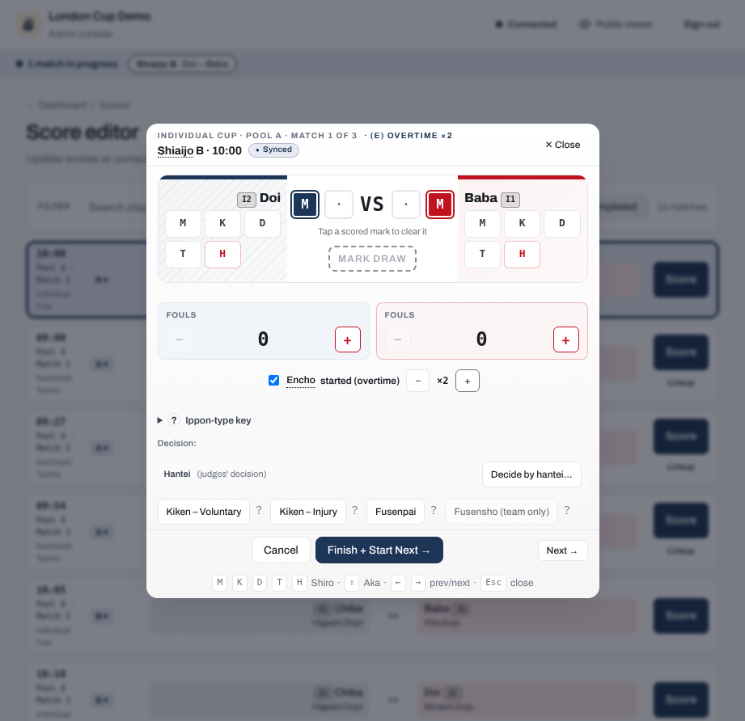
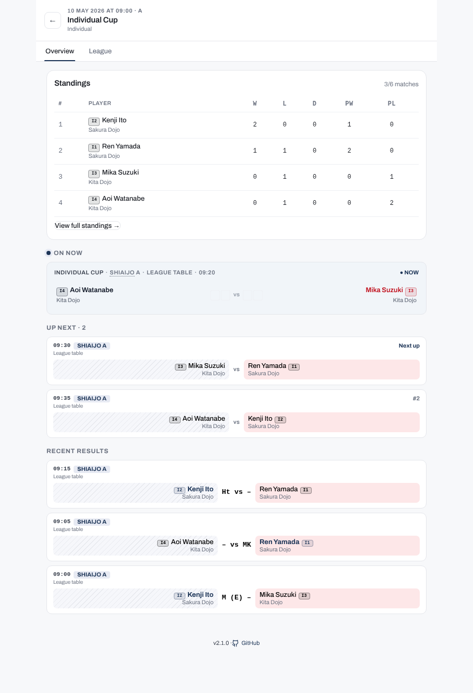

Record match decisions
Not every bout is decided on points. The score editor records the kendo outcomes described here. Open the score editor from the Scores tab on a competition page, or from a match card in the court console (refer to Score a match).

Kiken (withdrawal)
Kiken covers two distinct situations with different consequences.
Voluntary withdrawal (FIK Article 31)
A voluntary kiken is permanent. The competitor takes no further matches in this competition and cannot be reinstated.
Injury withdrawal (FIK Article 30)
An injury kiken can be reinstated later by the operator if the competitor recovers and is fit to continue. Until reinstated, the competitor is blocked from starting any further match.
Fusenpai and fusensho
Fusenpai is a no-show default loss: the competitor who did not appear forfeits the match.
Fusensho is a per-bout default win, used in team matches when the opposing team fields a vacant position. It is also what the app records for the match itself when you give the opponent of an already-barred competitor a default win; refer to Matches after a competitor is barred. When neither team has a fighter for a position, there is no default win: record that bout as a Tie.
A default win (kiken, fusenpai, or fusensho) awards the winner the match points without a technique, and each awarded point is recorded as a circle. This follows the FIK Regulations of Kendo Shiai and Shinpan (Article 32 and the score board appendix). The winner's score shows two circles, or a single circle during overtime, when only the one deciding point is awarded. Any point the withdrawing side had already scored stays valid and is kept on the sheet. In a team match, the sub-bouts already fought are preserved and still count toward the standings.
When the default win (kiken, fusenpai, or fusensho) decides a regular team match, every bout that has no result yet is also credited to the other team, 2-0 each: one individual victory and two points, the same figures a fusensho bout scores. This shows up wherever the match does: the individual victories and points totals, the standings, the bout rows, and the exported workbook. Bouts already fought keep their own results. Kachinuki encounters are unaffected, because they end on whichever bout the operator chooses, not on every position being filled.
Hikiwake
A hikiwake is a draw. It applies in pool, league, and Swiss matches, and in the individual bouts of a team encounter in any phase. A knockout match itself cannot end in a draw. A hikiwake contributes to the standings separately from wins and losses. To record one, tap Mark draw between the two sides in the score editor; in a team encounter, tap Tie (hikiwake) on the bout's row.
Encho (overtime)
Encho is the extra period played when a match is level at the end of regulation and must still produce a winner. That is usually a knockout match, but an individual pool match can also go to encho when the tournament's rules call for it. A team pool encounter is not extended: a tie there is a draw, and teams still level on the pool standings play a daihyosen instead. Encho follows ippon-shobu rules: the first competitor to score wins.
An individual knockout match cannot be finished level. While the score is tied, the Finish button reads Needs a winner instead: fight encho, then record a hantei if the competitors are still level after it.
In the score editor, open the Overtime control and tick Encho started. A counter appears so you can record how many overtime periods were fought, using the + and - buttons. The counter starts at 1 and has no upper limit. How many periods are fought, and how a match still level after them is finally settled, is the shimpan's call. That may be a judges' decision for an individual bout, or a daihyosen for a team encounter. Record what actually happened on court, however many periods that took.

Completed results follow the paper score sheet's layout. The centre, between the two sides' points, only ever carries one mark: vs when no special mark applies, X for a tie, (E) for a match that went to overtime, or (DH) for a team encounter sent to a representative bout. The marks never combine: a match that went to encho cannot end in a tie, and a daihyosen has no overtime. A side with no points shows a plain dash. A match won by men in regulation reads M vs –, and the same win in overtime reads M (E) –, on the court console and the public viewer. The exported results workbook carries the same (E) marker in its centre column, but leaves a no-points cell blank rather than dashed. The marker is the same however many overtime periods were fought, because the counter records the number for the tournament log but results never show it.
Everything else is a result, written beside the competitor it names: Ht next to the winner of a judges' decision, Kiken next to the competitor who withdrew, Fus. next to a no-show, and also Fus. next to the winner when the match itself was decided by a fusensho default win. A match decided by hantei after a tied overtime reads M Ht (E) K, with the winner's mark on the winner's side of the centre. A team encounter shows its team totals in the score cell instead, so for those the marks appear on the bracket and in the exported workbook.

Daihyosen
A daihyosen is a representative bout used to break a tie when points and ranking criteria cannot separate two teams.
It applies in two situations:
- In the knockout phase, when a team encounter finishes level.
- In team pool or league play, when two teams finish equal on every ranking criterion and the tie decides who advances or how they are seeded.
A tie that does not affect advancement is left as a shared rank with no extra bout. In league play, running the daihyosen is the operator's choice rather than an automatic step; refer to Team standings and tie-breaks for both options.
The bout is a single-point ippon-shobu with no time limit, between one representative from each tied team. Because it runs until someone scores, a daihyosen has no encho. The score editor lets you pick each team's representative from its roster. On the court console, the bout appears with a (DH) mark in the centre of the score. In pool and league standings, the team that won its daihyosen carries a DH badge.
Chusen (drawing lots)
Chusen is the last resort when two or more tied teams have played a round of daihyosen and the bouts still do not produce a strict order. Examples are a cycle where each team beats another, an all-drawn round, or two teams finishing level on daihyosen wins.
When chusen is required, the Pools tab (labelled League for league competitions) shows a "Chusen (drawing lots) required" panel listing the tied teams. Draw lots offline, enter each team's finishing position in the panel, and record it to settle the order and let the competition advance.
In a competition with pools and then a knockout, the panel can also appear after the knockout has started, when a corrected pool result leaves a tie that only chusen can settle. The knockout match that the tied place feeds waits until you record the positions.
The positions you record decide who goes through. If they change who holds a qualifying place after the old holder has already fought a knockout match, the app asks first, in the same way as for a corrected pool result: it names who moves and which match was fought, and Apply and reopen records the positions and reopens that match for the new qualifier. If that knockout match is being fought right now, the positions are not recorded until it is finished or sent back to the queue. Refer to Correct a pool result after the knockout has started.
Chusen is the only place ranks are set by hand, and it happens only when the bouts themselves cannot decide the order.
Change a chusen recorded in the wrong order
After you record a chusen, the same tab shows a "Chusen (drawing lots) recorded" panel with the order you recorded, for example "Drawing lots: 1st Kyoto, 2nd Osaka, 3rd Nara". If you entered the order wrongly, select Change. The entry opens again with the recorded positions filled in. Enter the order the lots actually gave and record it, or select Cancel to leave the recorded order as it is.
A changed order can change who qualifies from the pool. The app treats it the same as a first chusen, and checks the new order as a whole, so it only asks about a team whose place actually changes: if a team moves out of a knockout match that has already been fought, it asks first, and Apply and reopen reopens that match for the new qualifier. If that match is being fought right now, the change is not recorded until the match is finished or sent back to the queue.
Competitor eligibility after a decision
A kiken or fusenpai marks the competitor who withdrew or did not appear as ineligible for further matches. The app blocks starting an ineligible competitor, so a withdrawn competitor cannot silently re-enter the draw. An injury kiken (FIK Article 30) can be reversed: once the operator reinstates the competitor, the eligibility block is lifted and they can fight again.
Matches after a competitor is barred
A barred competitor's other scheduled matches cannot be started, so the app steers everyone around them instead of leaving a dead entry in the queue. They are skipped by Up next, Finish + Start Next, the shiai-jo display's next line, the lobby view, and on-deck alerts, so nobody is nudged to warm up for a bout that cannot be fought. On the public schedule, the pools, and the bracket, the barred competitor's name carries a Withdrawn mark.
On the court console queue, the Scores tab, and the score editor, the match instead carries a note explaining why (for example "Kyoto withdrew: record the default win.") and a button naming the opponent, for example Record default win for Sato. One tap records the match as a fusensho for the opponent, without touching the barred competitor's eligibility record. For an injury kiken, a Reinstate button naming the barred competitor sits alongside it, restoring eligibility so the match can be fought instead of defaulted. Once recorded, the match reads, for example, "Recorded: Default win (fusensho) for Sato. Kyoto had withdrawn.", with a Clear default win action if it was recorded by mistake: it reopens the match, back to the queue if the competitor is still barred (record the default win again, or reinstate them first; a match going back to the queue takes no court, so another match running on that court does not stop it), or back to in progress, ready to score, if they have since been reinstated.
If both competitors due to meet are already barred, neither can fight. In a pool or league match, record it as drawn with Record as drawn (neither can fight): neither side receives a win or points. A knockout match has no equivalent, since the bracket needs a winner; correct the earlier withdrawal, or the draw, instead.
Clear withdrawal and reopen on the original withdrawal (refer to Correcting a withdrawal recorded by mistake) lists the later matches that were given a default win because of it, each with its pairing, so you know what is affected. Those matches keep their default win; reopen any of them individually with Clear default win once the competitor is eligible again.
Correcting a withdrawal recorded by mistake
A kiken or fusenpai entered in error can always be fixed. Open the match in the score editor. It shows what is recorded, for example "Recorded: Kiken – Voluntary, Kyoto withdrew", and marks the side that withdrew with Kiken or Fus. beside its name. In a team match the result below the bouts names the recorded winner and the decision, and the bouts after the withdrawal show as default wins for the other team, even though nobody actually fought them. Pick the fix that matches what happened:
- The wrong competitor or team was marked. Record the withdrawal again for the other side. In an individual match, use the Kiken – Voluntary, Kiken – Injury or Fusenpai button in the editor's Decision row. In a team match, open Withdrawal or no-show and use the same buttons there. The side you first marked is eligible again, and the other side becomes the one that withdrew.
- Nobody withdrew. Choose Clear withdrawal and reopen. It takes one tap and needs no reason; the editor says what it will do beside the button. A withdrawal gives the opponent the win by default, so without it the match was never decided. The match goes back to in progress and the editor stays open on it. The withdrawn competitor or team can compete again. Score the rest of the match and finish it as usual.
What the reopen keeps depends on the match:
- A team match keeps every bout already fought.
- An individual match keeps the points the withdrawn competitor had struck. It does not keep the winner's points. Recording the withdrawal replaced them with the default-win circles, and clearing the withdrawal removes those circles, so enter the winner's points again before you finish. The same applies to a team's representative bout, which is scored in the individual editor, and it also keeps who fought it for each team. The editor says this beside the button, before you tap it.
A kachinuki team match that ended with a withdrawal or no-show shows the same Clear withdrawal and reopen in place of its Reopen match button, because the reopen also makes the withdrawn team eligible again. A kachinuki match that ended any other way keeps Reopen match.
Removing a withdrawal makes the withdrawn competitor or team eligible again, whichever kind of withdrawal it was, because a withdrawal entered by mistake never happened. This includes a voluntary kiken, which otherwise cannot be reversed.
Save correction on its own never removes a withdrawal. It saves the points or bouts you enter and keeps the withdrawal, its winner and the competitor's eligibility as they were recorded. In an individual match the winner's default-win circles are shown but cannot be changed. Only the withdrawn competitor's points can be corrected, and they are limited to one point, because a competitor with two points has already won the bout.
A fix can change who goes through to later matches, so the app warns you first and you can cancel or go ahead:
- Recording the withdrawal for the other side warns you when either side has already started a later match.
- Clearing a withdrawal in a knockout match warns you when the next match has already been played. If you go ahead, that next match is reopened so it can be fought and scored again, and the editor names it once the reopen is done. A round after it that nobody has played yet stops showing its winner. If a withdrawal decided that next match, its withdrawn competitor is eligible again too.
In a knockout, a next match that is still in progress must be finished or sent back to the queue before a withdrawal can be cleared. If another match is running on this match's court, the app names it and offers to send it back to the queue, which clears any score entered for it.
In a pool of a competition that ends in a knockout, clearing a withdrawal is not refused because of the knockout. Clearing it moves nobody in the bracket: the pool simply has an unfinished match again. When you finish that match, the app checks whether the result changes who qualifies from the pool. The same result is saved as usual. A result that moves someone who has already fought in the knockout is handled like any pool correction: you are shown who moves and which knockout matches are affected before anything is saved. Refer to Correct a pool result after the knockout has started.
Matches that were already given a default win because of the withdrawal keep it; refer to Matches after a competitor is barred for how to list and correct them.